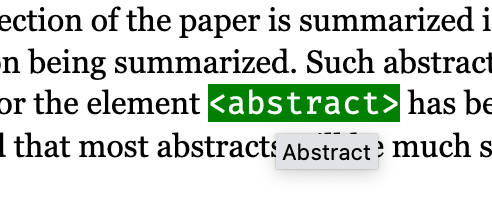
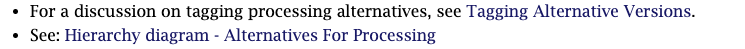

Throughout the text, live internal cross references (such as element and attribute names) appear in color. Hovering over a cross reference to an element or attribute will show the narrative name of the element or attribute
|  |
Cross references to elements are the element tag name (generic identifier), surrounded by delimiters (<abstract>). Almost all element names, including those in the Context and natural language Content Model Descriptions are live links to the specific element page.
Attribute references appear as the attribute name, prefaced with an at sign (@specific-use). These link directly to the specific attribute page.
Parameter Entity (PE) references are the name of the PE, prefaced by a percent sign and closed with a semicolon (%list.class;). These link directly to the parameter entity page.
References to narrative sections of the Tag Library are preceded by the word “See”, and link to sections in the narrative text.
|  |